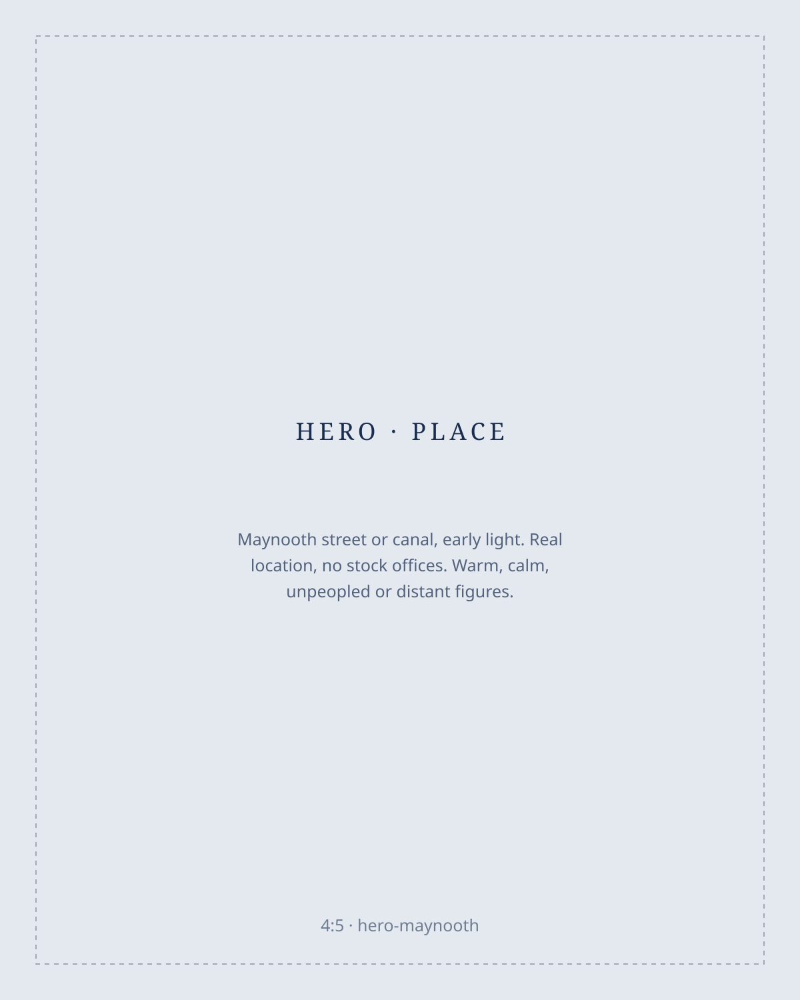

Accounting made clear.
Accounts, tax and business advice for businesses across North Kildare.
Spend less time worrying about accounts and more time running your business. We manage your accounting, tax, bookkeeping and payroll and explain the numbers in plain English.
Serving Maynooth, Leixlip, Celbridge, Kilcock, Clane and surrounding areas.

Your accountant should help you understand your business.
Many business owners only hear from their accountant once a year, when the accounts are already history. We work differently: alongside the annual compliance work, we stay involved during the year: answering questions, flagging problems early and giving you practical advice in plain English.
The result is simple: you always know where the business stands.
Services for every stage of your business
Accounts and tax
Annual accounts, tax returns, corporation tax, income tax, VAT, registrations, tax planning and Revenue correspondence.
02Bookkeeping
Transaction recording, bank reconciliation, expense management, VAT preparation and financial reporting.
03Payroll
Payroll processing, payslips, payroll reporting, Revenue submissions and employee changes.
04Management accounts
Regular reports covering revenue, costs, profit, cash flow and business performance.
05New business support
Sole trader versus limited company guidance, setup, registrations, software and bookkeeping processes.
06Business advisory
Cash-flow planning, hiring and growth decisions, cost management, pricing and forecasting.
You should not have to chase your accountant.
- I only hear from my accountant at year-end.
- I do not know what tax bill is coming.
- Bookkeeping is taking too much of my time.
- I have numbers, but I do not know what they mean.
- My business has grown, but my accounting process has not.
- I need advice before making a decision, not after.
Good accounting should give you fewer surprises and better information.
Six reasons businesses stay with us
-
Local team
When you call, you talk to people who know your area and your business.
-
Clear advice
Accounting explained in plain language, in answers you can use.
-
Fast communication
We aim to respond to normal questions within one working day.
-
Fixed fees
Most ongoing services use agreed monthly fees. No surprise invoices.
-
Modern systems
Cloud accounting and digital processes where practical.
-
Proactive support
We flag problems before deadlines, not after it is too late to act.
Built for businesses like yours
Trades and construction
Builders, electricians, plumbers, landscapers, engineers and small construction businesses.
Professional services
Consultants, architects, surveyors, designers, IT contractors and marketing consultants.
Local businesses
Cafés, restaurants, retail, gyms, childcare businesses, salons and clinics.
Company directors
Directors of small Irish limited companies who want support with accounting, tax, reporting and administration.
New business owners
People starting out who need the right accounting processes from day one.
A local practice, built on relationships
Aoife Byrne founded Liffey Accountancy in Maynooth in 2017, after 12 years in larger accountancy firms. Today we are a five-person team that has grown mainly through referrals and repeat business: long-term relationships, not one-off jobs.
Your accountant should help you understand your business. That is the whole idea of this practice.
Aoife Byrne, founder
Accountants for businesses across North Kildare
From our base in Maynooth we work with businesses throughout North Kildare (Leixlip, Celbridge, Kilcock, Clane, Straffan and the surrounding areas) and in Lucan and West Dublin where it makes sense.
Frequently asked questions
How much does an accountant cost?
Most ongoing clients pay a fixed monthly fee. The price depends on the business size and services required. We agree the fee before any work starts.
Can you take over from my existing accountant?
Yes. Liffey Accountancy can manage the changeover process, including contacting your current accountant and transferring the records. It is usually much simpler than people expect.
Do I need to change accounting software?
Not necessarily. We will review your current systems first and only recommend a change if it would genuinely make things easier for you.
Do you work with sole traders?
Yes.
Do you work with limited companies?
Yes.
Do I need to visit the office?
No. Most work can be completed remotely. In-person meetings are also available if you prefer.
What areas do you cover?
We primarily work with clients in North Kildare (Maynooth, Leixlip, Celbridge, Kilcock, Clane, Straffan and nearby areas) and nearby parts of West Dublin.
Looking for a better accountant?
Tell us about your business.
- A free 20-minute introductory call, no obligation.
- We talk about your business and your current accounting support.
- We discuss any problems you want to solve.
- We both decide whether Liffey Accountancy is a suitable fit.